F1 · Purpose and Expectations
Please do not enter any confidential information. Information received
will not be sold or sent to a third party.
Sections with (*) are required to complete.
F5 · State and Recovery Specimen
Document default, focus, required, valid, invalid, disabled, and a static server-returned error. Keep this section separate from the primary blank form when necessary to avoid misleading users.
Appearance for an input at default:
Default is set to background color inherit.
Appearance for an input at focus:
Visible focus indicators use the same color and format as previous themes, but the color was slightly darkened to help improve contrast for accessibility.
Appearance for an input that is required:
Input required is set to inherit background color as required elements are already accentuated with an asterisk (*) as mentioned in the legend and a heavier border and different color would result in over-styling.
Appearance for an input that is valid:
User-valid is used to maintain default colors until after the user interacts with the input. When the user does the background turn into a soft pastel green color.
Appearance for an input that is invalid:
User-invalid makes the background color turn light red after interacting and providing an invalid input. After submission a text bubble will appear next to the top input that has an error explaining how to fix it.
Appearance for an elements that are disabled:
Disabled elements are given a 75% opacity to meet contrast accessibility requirements and provide a muted tone of the button indicating its inability to be used and the cursor is not allowed to interact with the element.
There is a problem with the fictional submission
Error: Enter an address in the format name@example.com.
F2 and F6 · Planning and Evidence
Link your field inventory, state matrix, fictional test-data list, completed test record, and AI disclosure.
Fictional Test-Data List:
State Matrix
| State | User must perceive | Implementation concern |
|---|---|---|
| Default | The control boundary is for the background color which is set to inherit. The default pseudo-selector is used for input, the preferred time ID, textarea, and required. The default setting also applies to optional and required fields ensuring everything starts with the same appearance. | Even though the preferred time section doesn't have a default selection option, it will still turn green after the user interacts. This way, a valid input is always selected but the user is visually informed on inputs they have completed successfully. |
| Focus | Current Keyboard Location | A visible focus indicator was used with an outline that has a contrasting color theme (--color-border/##81af78) and a small offset. |
| Invalid/Error | Where the error occurred in the form, why, and how to fix it. | A light red background will fill the invalid input and a text bubble below will provide context on how to fix the error based on its declared type. |
| Disabled | Elements that cannot be interacted with | Button opacity is set to 75%, input background color is changed to a gray color, and the cursor is unable to interact with the element. |
Fictional Test-Data List
-
Test: Keyboard-Only Form Completion
- Name: Jane Doe
- Phone Number: 555-555-1960
- Email: jsodoe@email.net
- Preferred Time: Afternoon
- Preferred Contact: Email
- Preferred Position: Researching
- Tell us about yourself: Jane is cool.
- Discovery: Instagram
-
Test: Malformed Submission
- Name: Diana Bishop
- Phone Number: 7787351577
- Email: glowBishop
- Preferred Time: Morning
- Preferred Contact: Phone
- Preferred Position: Both
- Tell us about yourself: [Empty]
- Discovery: [Empty]
-
Test: Valid Submission
- Name: Winston Churchill
- Phone Number: 925-258-7391
- Email: theChurchillest@sbcglobal.net
- Preferred Time: Evening
- Preferred Contact: Email
- Preferred Position: Writing
- Tell us about yourself: My words have made a profound impact in history.
- Discovery: [Empty]
-
Test: Query-String Inspection
- Name: Suzie Que
- Phone Number: 999-103-8521
- Email: theSuzinator@gmail.com
- Preferred Time: Afternoon
- Preferred Contact: Email
- Preferred Position: Writing
- Tell us about yourself: I have 20 years of writing experience.
- Discovery: Facebook
-
Test: Query-String Inspection
- Name: Leonard Hoffstadter
- Phone Number: 707-599-9999
- Email: physicskid@msn.com
- Preferred Time: Morning
- Preferred Contact: Phone
- Preferred Position: Research
- Tell us about yourself: I have dedicated my life to researching.
- Discovery: Don't know
-
Test: Query-String Inspection
- Name: Dean Briar
- Phone Number: 323-599-0710
- Email: person@email.com
- Preferred Time: Evening
- Preferred Contact: Email
- Preferred Position: Both
- Tell us about yourself: Just seems fun!
- Discovery: Local Newspaper Ad
Test Record
-
HTML Validation
To check for any HTML errors, I ran the HTML script through the W3C HTML validator. I expected no errors to occur. After running the script through the validator, I discovered 3 errors: one for the forms action attribute value, one for no default option on the select input, and one for the programmatic connection between label and input for the preferred contact question.
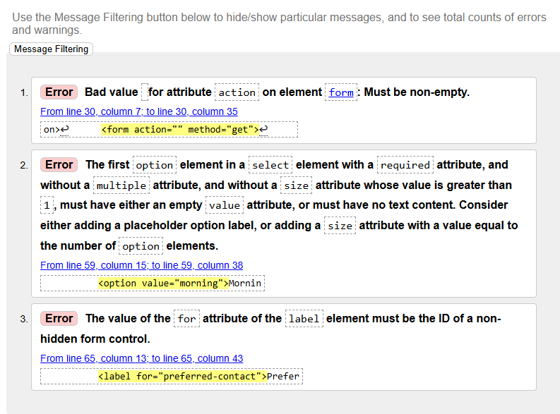
The first error is message addressing the empty action attribute. Due to the nature of this assignment, data is to not be actually collected. The blank action value ensures that upon submission of the form, it is reset and data submitted is available in the URL for verifying that data is properly sent and name and values are paired. For this reason, no change will be made to the action attribute.
For the second error, no default(placeholder) option on the input with the select and option element, the solution was fairly straightforward. An option was added with the name "Select an option". This value is disabled and selected. This allows for the placeholder button to not be a selectable option, the set default, and a prompt for the user to make a choice. The styled states assist with informing the user that they are completing the form correctly. It is gray when at default to also indicate that choice is disabled. It is red if the user clicks on the dropdown menu but then clicks away without selecting an option. It is green when an option is selected. The script was run through the HTML validator to confirm that the second error was corrected as anticipated. After running through, the second error was corrected.
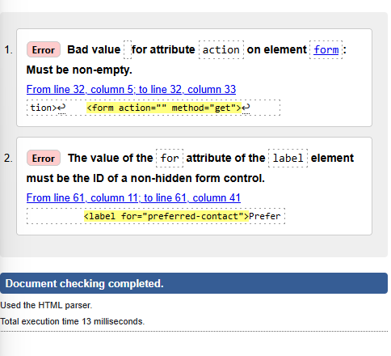
To address the programmatic association error on the preferred method of contact question the field was reformatted to have a fieldset to associate the input options with the label. To test that this corrected the issue I ran the script through the HTML validator expecting all errors to be resolved except for the empty action value error. After running the script again, the error was resolved and expectations were met.
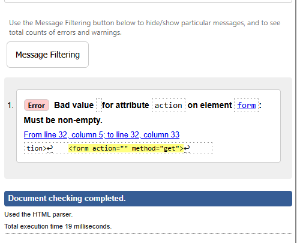
-
CSS Validation
To check for any CSS errors, I ran the CSS code through the CSS validator. I expected for no errors to be reported. After using W3C's CSS validation tool, I received confirmation that there was no errors present.
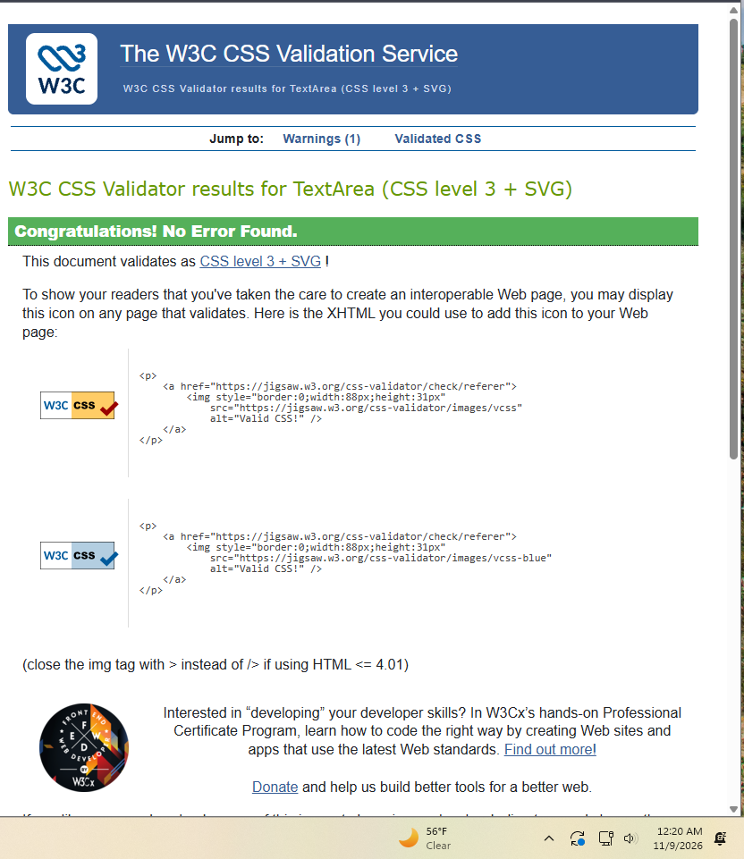
-
Keyboard-Only Completion & Submission Attempt
To test keyboard accessibility the website was navigated, completed and submitted using the keyboard only. I expected the visual focus indicator to be present as the site was navigated, tabbing to move through inputs, up and down keys to pick between options, and the state matrix table to navigable using the left and right keys when the table overflows from a smaller viewport. As I went through the form, I observed the visual focus indicator was present and didn't change input colors unless the inputs were directly interacted with through typing of option selection. Tabbing and arrow keys functioned as expected and the submit button was pressed using the enter key. The third image below shows the submitted data in the URL for proof. No changes were needed.
Fictional Data Used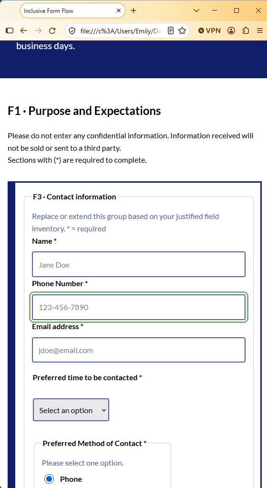
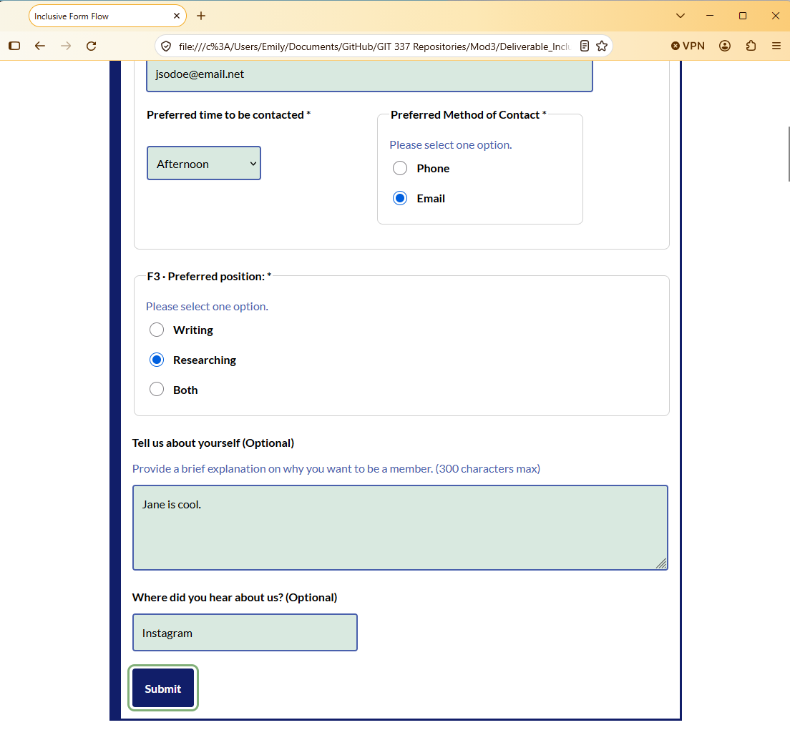
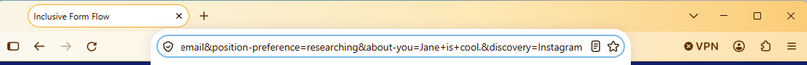
-
Accessible-Name/Group Inspection for: representative text, radio, checkbox, select, and textarea controls
To ensure accessible name/group controls followed WGAC standards, I opened the accessibility tree for the website to observe matching value for name and group attributes. This ensures each input or button is programmatically associated to it's holder and easier for those with assistive technologies to navigate. I expected clear relationships for each element and no problems reported. I observed the clear relationships with no reported problems in the check panel. No changes were needed.
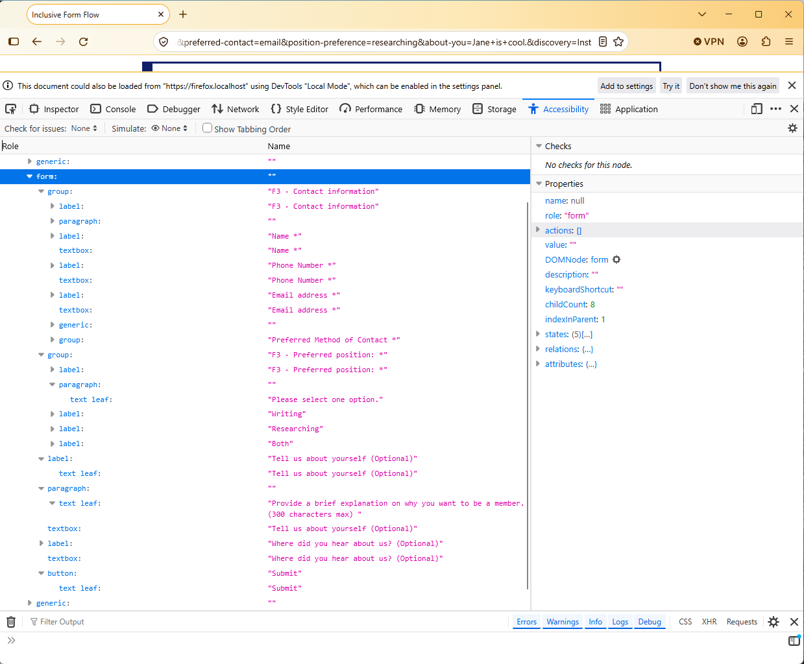
-
Empty Submission
To ensure requirements are enforced, I submitted an empty form. I expected the form to refuse being submitted turn required area red, and provide a textual clue as to how to fix the top-most invalid input. After submitting the form, I observed the form did not submit (which can be confirmed by the URL not changing), invalid required inputs turned red, optional inputs turned green, and the top invalid input had a textual cue on how to fix the input. No changes were needed.
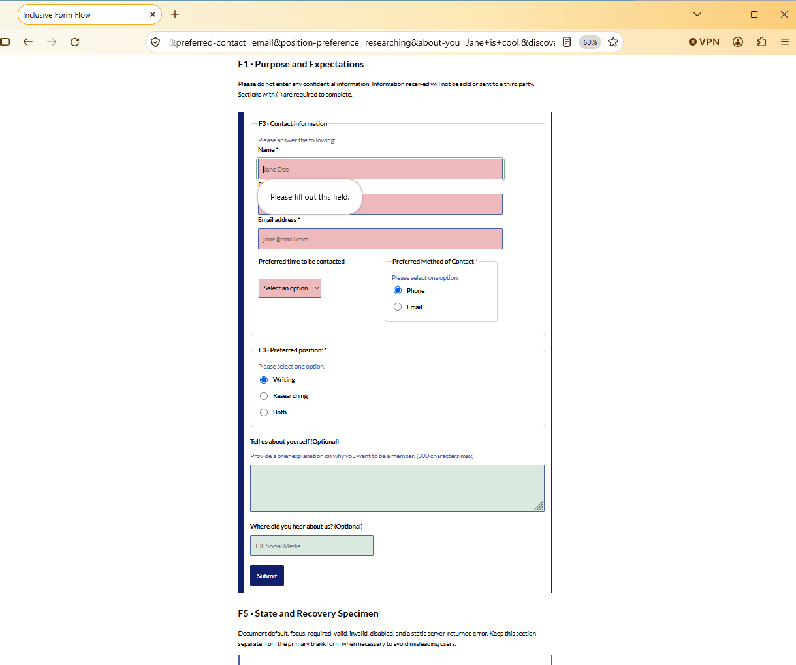
-
Malformed Submission
To test how incorrect inputs are handled by the form, a submission was made with an incorrectly formatted email. I expected the form to not submit, the email input to turn red, and a textual cue explaining how to fix the email input. After submitting, I observed that all expectations were met. No changes were needed.
Fictional Data Used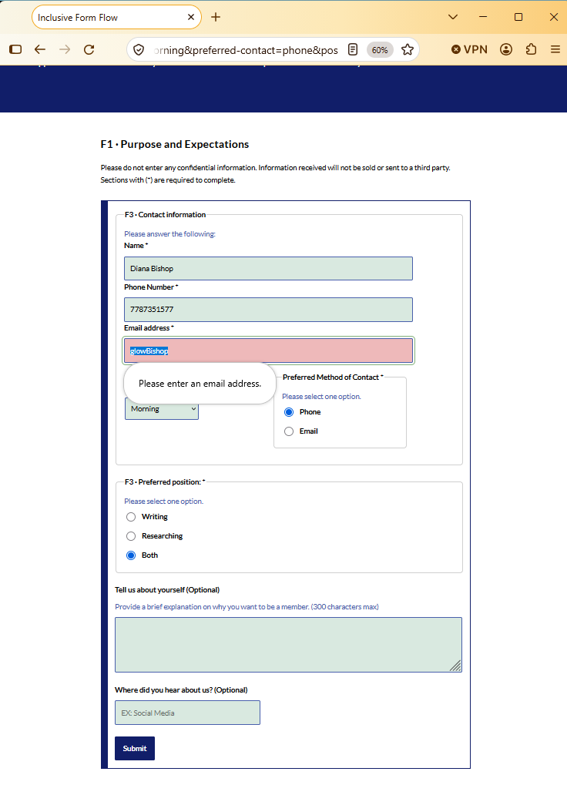
-
Valid Submission
To test how the form handles valid submissions, a form was completed to meet all requirements. I expected the inputs to turn green after being properly entered and the data to appear in the URL after submission. I observed all inputs turn green and the form submitted properly, presenting the data in the URL as expected. No changes were needed.
Fictional Data Used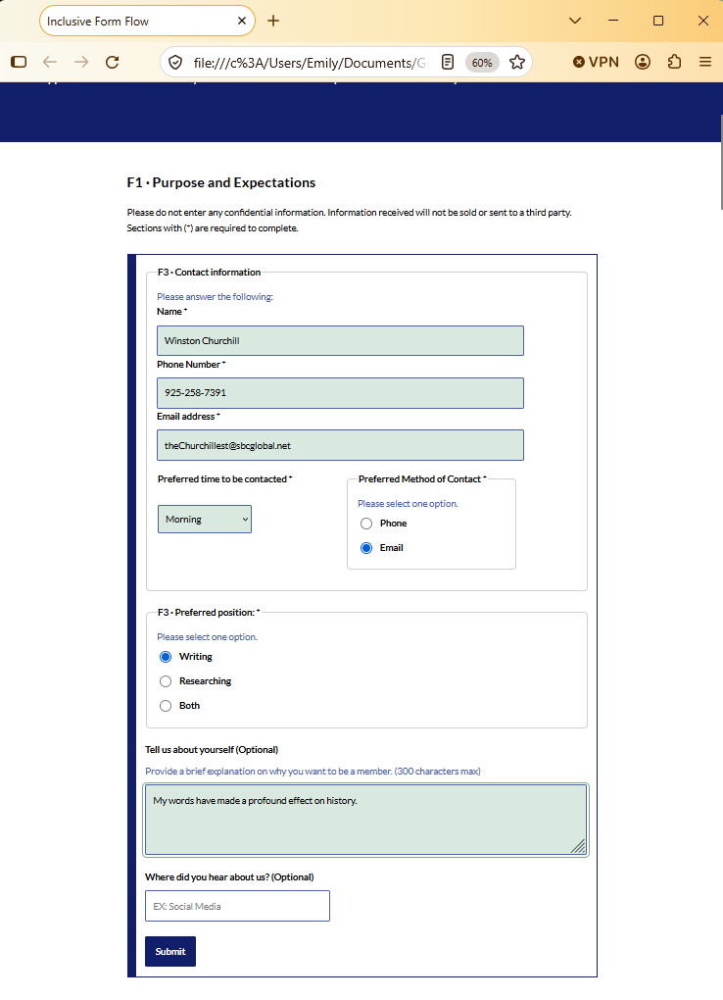
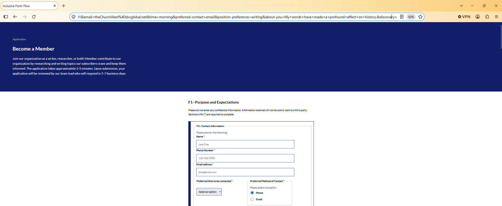
-
Note: no boundary-minimum or -maximum could be tested as the inputs do not require an input that uses a boundary.
-
320px Viewport Width
To test the responsiveness on smaller screens, I set the viewport to 320px in responsive mode to check for overflow and any anomalies that may have occurred to the layout. I expect all fields to scale down to fit the viewport, the preferred contact and time should stack, and any instructional text should wrap. I observed there was no overflow from any fields of the form, preferred contact and time stacked, and the layout formatted itself as expected. No changes are needed.
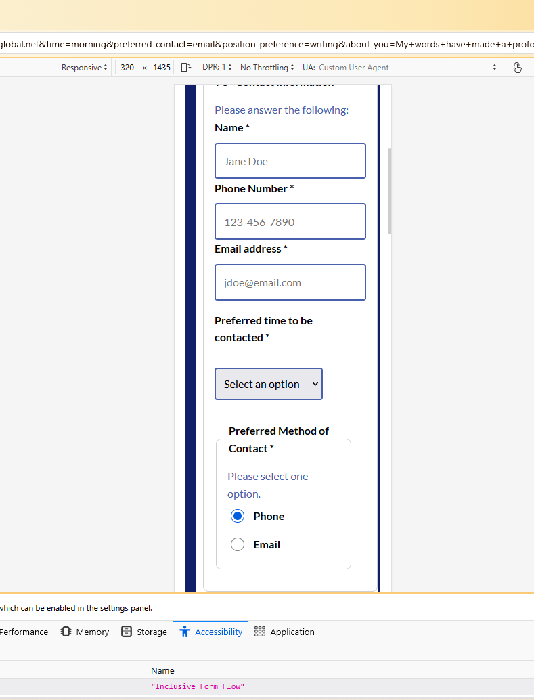
-
768px Viewport Width
To test the responsiveness on medium-sized screens, I set the viewport to 768px in responsive mode to check for overflow and any anomalies that may have occurred to the layout. I expected all fields to scale down to fit the viewport and the preferred contact and time should move to the same row. I observed that there was no overflow, the layout formatted itself as expected and the preferred contact and time fields moved to the same row. No changes are needed.
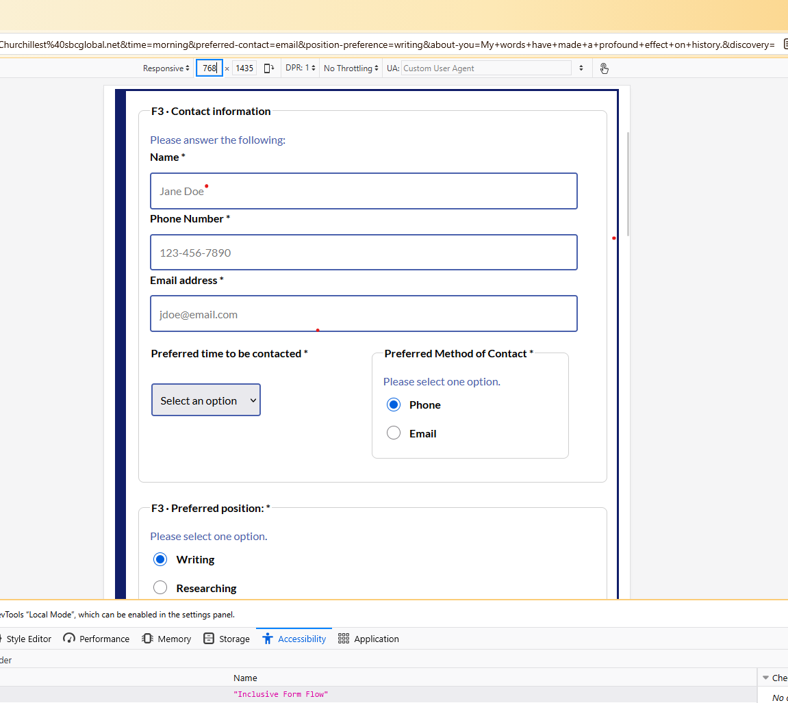
-
1280px Viewport Width
To test the responsiveness on larger screens, I set the viewport to 1280px in responsive mode to check for overflow and any anomalies that may have occurred to the layout. I expected the same layout to appear as the 768px width screen but scaled a little larger. There is a max-width property used on main that should limit the form from scaling too large. I observed that the form layout behaved as expected and no anomalies or overflow was present.
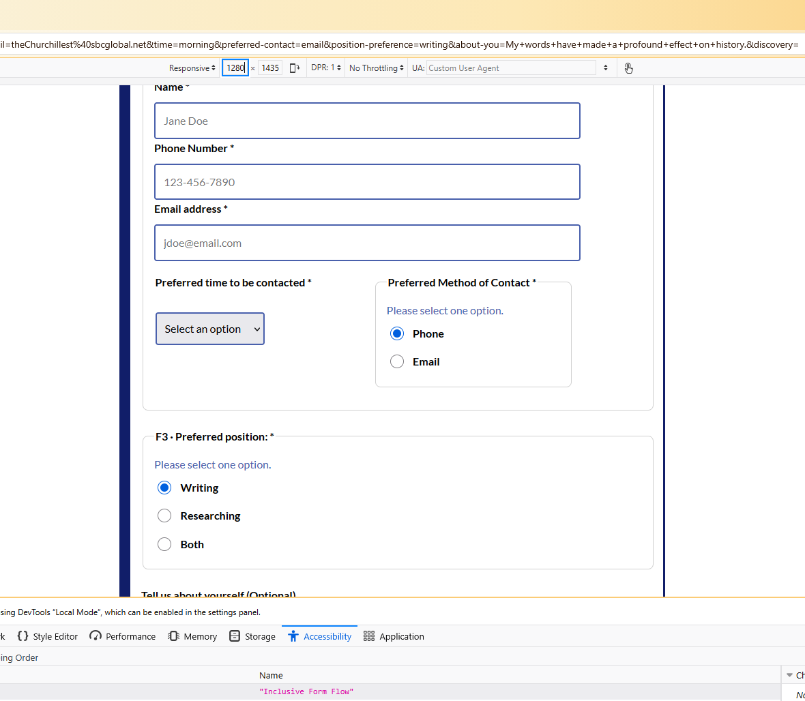
-
200% Zoom/Reflow
To test how the website handles zooming and layout formatting, I zoomed in on the website at 200%. (This can be confirmed by observing the URL on the right. The browser states how zoomed in the website is.) I expected the website to take on the small screen format to keep the layout readable and navigable, while maintaining crisp text. I observed that the website acted as expected with no issues on layout, sharp text, or navigability. No changes are needed.
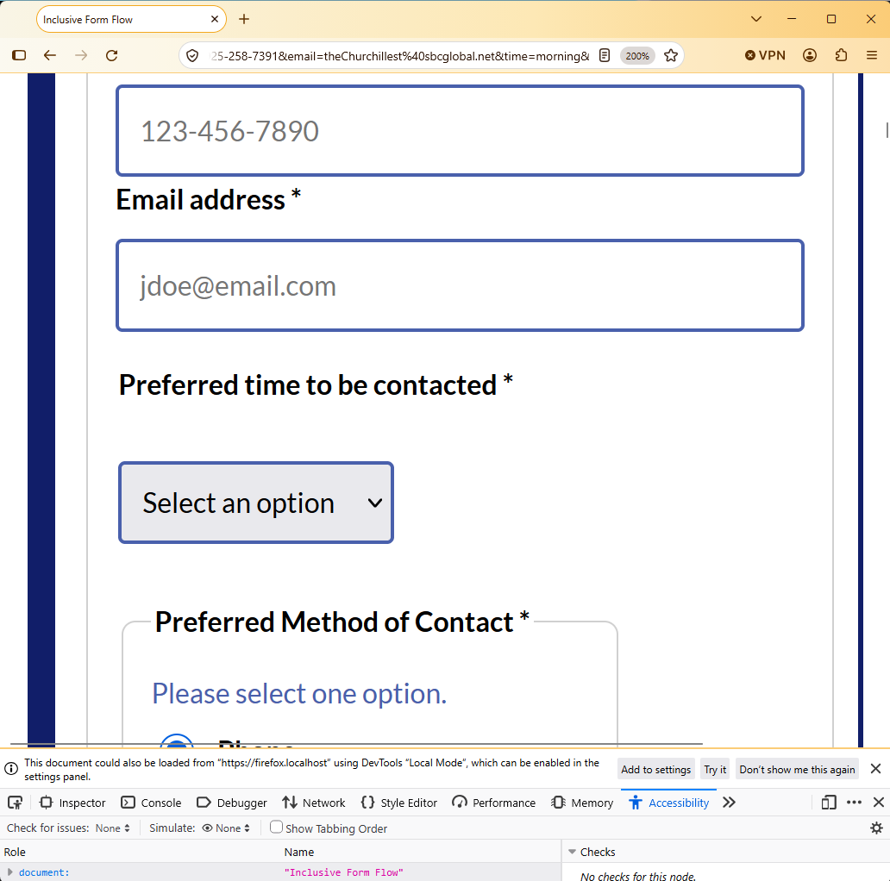
-
Focus Visibility
To ensure the visual focus indicator was working properly, I tabbed through the document to ensure each input display out the green outline. I expected the outline to appear in sequential order while moving through the form. I observed the focus indicator working properly. No changes are needed.
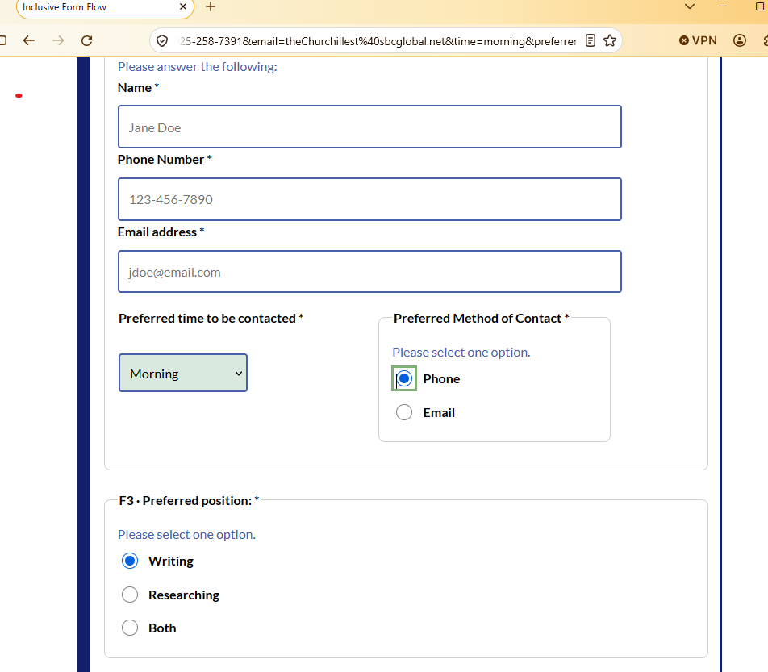
-
Pointer-Touch Operation
To test that the form was touch friendly, I went through and selected options in different fields by their label. I expected that clicking the label would select the input attached. I observed the label properly selected the input it is programmatically attached to. No changes are needed.
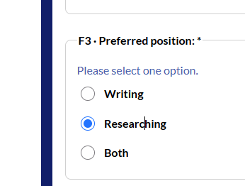
-
Query-String Inspection with Fictional Data
As no information is supposed to be collected for this project, 3 sets of fictional data was submitted in the form to observe that it was parsed and paired properly in the URL. For each submission, I expect the data to properly pair and list all data input correctly. After each submission, I observed a proper output and no errors. The below images reflect how the data was output in sequential order.
Fictional Data Used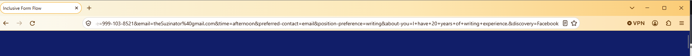
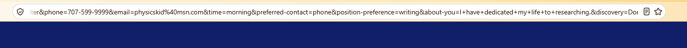
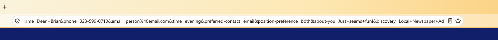
AI Disclosure:
No AI was used in this project.